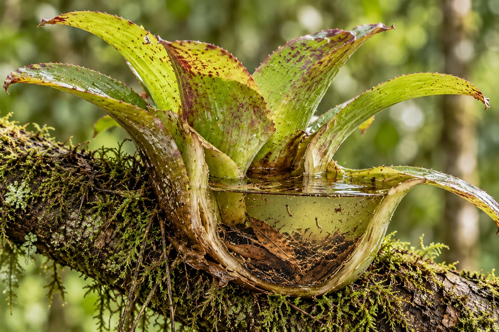

Inicio > Crónicas de un biblio-naturalista > Biomímesis en acción (10)
Biomímesis en acción (10)
Agua almacenada en el aire
Bromelias de tanque e infraestructura oportunista
Una poza elevada sobre el suelo
En lo alto de un bosque tropical puede quedar agua cuando la lluvia ya ha cesado. Se acumula entre hojas superpuestas, recibe fragmentos de vegetación que caen desde arriba y se convierte en un lugar donde viven y se alimentan una multitud de pequeños animales. Esa poza no forma parte de un arroyo ni está en contacto con el suelo. Se ha formado dentro de una planta agarrada a un árbol.
La planta es una bromelia de tanque. Utiliza una rama o un tronco como soporte, pero el depósito de agua está formado por sus propias hojas. La lluvia que de otro modo atravesaría el dosel del bosque queda retenida para ser aprovechada más adelante. Al mismo espacio llega materia arrastrada desde la vegetación circundante. Un recurso que aparece de manera irregular permanece así disponible durante más tiempo en un lugar determinado.
Se trata de una disposición infraestructural poco habitual. La bromelia no necesita hacer crecer un árbol, controlar el clima ni disponer de una parcela de terreno para retener agua. Desarrolla una estructura útil dentro de unas condiciones que no controla. Para las bibliotecas, los archivos y otros proyectos de conocimiento que operan en condiciones de fragilidad, la pregunta pertinente es igualmente concreta: ¿qué capacidades pueden desarrollarse sobre soportes ya existentes, sin necesidad de crear primero una institución permanente que las albergue?
Un depósito hecho de hojas
Las bromeliáceas constituyen una familia de plantas muy diversa, y no todas sus especies forman depósitos capaces de retener agua. Algunas obtienen humedad de la lluvia, la niebla o el aire húmedo mediante superficies foliares especializadas, sin mantener una reserva externa de agua considerable. Las plantas que nos interesan aquí son las especies formadoras de tanques, entre ellas numerosas epífitas que crecen sobre los árboles sin extraer directamente de sus hospedadores los nutrientes que necesitan, como hacen las plantas parásitas.
En estas especies, las bases anchas de las hojas se superponen y forman una roseta con espacios capaces de acumular agua. La que llega al dosel durante la lluvia o en condiciones de niebla queda retenida entre las hojas, junto con partículas, sustancias disueltas y restos orgánicos. Los tricomas foliares especializados intervienen en la absorción de agua y nutrientes contenidos en esas reservas. Las raíces fijan la planta a su soporte y, según la especie y la etapa de desarrollo, también pueden participar en la absorción. La antigua descripción de las raíces de las bromelias epífitas como simples órganos de anclaje resulta demasiado simplificadora (Takahashi y Mercier 2024).
El tanque no elimina la incertidumbre de las precipitaciones. Modifica sus consecuencias. Las mediciones realizadas en más de doscientas especies de bromelias documentaron capacidades de almacenamiento que iban desde unos pocos mililitros hasta casi cinco litros; el tamaño de la planta resultó ser un factor importante para predecir esa capacidad (Zotz et al. 2020). La variación importa: una reserva pequeña puede agotarse con rapidez, mientras que otra mayor puede permitir que la planta atraviese un intervalo más prolongado entre lluvias. Ninguna de las dos puede suministrar agua indefinidamente.
El mecanismo esencial, por tanto, no es la abundancia. Es la transformación de una llegada pasajera en una reserva temporal. La planta captura una oportunidad en el momento en que se presenta y modifica el tiempo durante el cual esa oportunidad puede resultar útil.
Un depósito que se convierte en hábitat
El tanque de una bromelia no es un mero recipiente destinado al uso exclusivo de la planta. Su agua puede albergar bacterias, hongos, algas, insectos y otros organismos pequeños. Algunos animales acuden a beber; otros pasan parte de su ciclo vital dentro del depósito. Las hojas caídas y otros restos orgánicos entran en el agua, donde la actividad microbiana y animal contribuye a transformarlos en materiales que circulan por una diminuta red trófica. El estudio de los fitotelmas, las acumulaciones de agua retenidas por plantas vivas, ha convertido estos sistemas diminutos en objetos especialmente útiles para investigar las comunidades ecológicas (Kitching 2001).
El depósito también sostiene una actividad biológica que puede influir en el acceso de la planta a los nutrientes. Estas relaciones varían: la presencia de un tanque no garantiza una comunidad animal determinada ni intercambios uniformemente beneficiosos (Ladino et al. 2019).
Para un proyecto de conocimiento, esto sugiere una segunda posibilidad. Un soporte improvisado puede hacer algo más que dar cobijo a materiales. Una sala prestada puede convertirse en un lugar donde se describen documentos; una emisora comunitaria puede ayudar a recoger testimonios; una computadora compartida puede alojar un catálogo provisional; un punto de reunión puede poner en contacto a personas que hasta entonces conservaban partes separadas de una misma historia. El soporte no se limita a mantener vivo el proyecto. Bajo ciertas condiciones, transforma lo que el proyecto puede hacer.
Pero una sala prestada no es el tanque de una bromelia. Sus funciones dependen de acuerdos, trabajo, normas de acceso y la voluntad de participar de la gente. El mecanismo ecológico permite formular de otra manera el problema de diseño, pero no puede proporcionar el acuerdo social que vuelve legítima la solución.
Construir sin ser dueño del terreno
Muchas iniciativas de conocimiento comienzan con una secuencia conocida de exigencias institucionales: conseguir un edificio, comprar equipos, mantener una plataforma, contratar personal y, solo entonces, empezar a reunir u organizar materiales. Una infraestructura estable puede proteger el trabajo y aclarar responsabilidades, pero esas exigencias también pueden retrasar indefinidamente un proyecto.
La bromelia sugiere otra secuencia: identificar lo que ya proporciona el entorno, localizar los puntos por donde llegan los recursos y construir una pequeña estructura que permita captarlos. El resultado no es una independencia completa ni una simple dependencia. Es un sistema local vinculado a otro mayor, pero dotado de funciones propias.
Este enfoque podría resultar pertinente para un archivo territorial distribuido entre varias comunidades. En un lugar puede haber una sala disponible una vez al mes. En otro, un suministro eléctrico fiable, pero ningún espacio abierto al público. Un tercero puede contar con una bibliotecaria capaz de mantener las descripciones, aunque con una capacidad de almacenamiento digital reducida. Un cuarto puede disponer de conexión a Internet solo durante unas pocas horas a la semana. Ninguno de esos lugares está en condiciones de sostener por sí solo una institución archivística convencional. Sin embargo, en conjunto pueden ofrecer las condiciones necesarias para desarrollar varias actividades pequeñas, conectadas entre sí.
El propósito sería diseñar puntos de recepción, descripción, consulta y transferencia a partir de capacidades locales disponibles. Un dispositivo que funciona en la computadora de una escuela no tiene por qué ser idéntico al que opera desde una biblioteca comunitaria. Lo que debe mantenerse compatible es la información sobre qué se recibió, cómo se describió, quién puede acceder a ello y dónde se encuentra otra copia autorizada o la persona responsable de su custodia.
Se trata de permitir que lugares ya existentes sostengan actividades que, de otro modo, exigirían un centro construido específicamente para ello. El anfitrión proporciona una condición de posibilidad, en tanto que el proyecto añade una función limitada e identificable.
Un archivo de campo con varios depósitos
Pensemos en un pequeño proyecto dedicado a documentar las transformaciones de una cuenca hidrográfica. Los habitantes aportan fotografías de las orillas y la vegetación, registros sonoros de acontecimientos estacionales y descripciones escritas de nombres locales. El proyecto no dispone de una sede permanente, y la participación aumenta o disminuye según el clima, los desplazamientos y la disponibilidad de las personas.
Una respuesta convencional podría consistir en esperar financiación para crear un repositorio central. Un diseño inspirado en las bromelias comenzaría, en cambio, por los recursos que ya existen. En una escuela podría organizarse una sesión mensual para recibir materiales y registrar sus datos básicos de procedencia. Una biblioteca comunitaria podría mantener un registro descriptivo controlado. Una asociación local podría prestar temporalmente equipos para revisar grabaciones. Cuando hubiera conectividad, las copias autorizadas y las descripciones actualizadas podrían transferirse a otra persona o entidad responsable de su custodia.
Cada lugar necesitaría un procedimiento modesto y bien definido, no una plataforma archivística completa: identificar cada aporte, registrar su origen, documentar restricciones y permisos, conservar suficiente contexto para permitir interpretaciones posteriores, comprobar que las transferencias se han completado correctamente y dejar constancia de quién asume la responsabilidad hasta la siguiente transferencia. Los archivos que requieran protección no deberían depositarse en una computadora compartida sin medidas de seguridad. Cuando un anfitrión dejara de ofrecer su apoyo, el proyecto tendría que contar con un procedimiento previamente ensayado para retirar sus materiales y transferir las responsabilidades correspondientes.
Esta es una propuesta de diseño, no una práctica validada por la investigación sobre bromelias. Su valor tendría que evaluarse frente a una alternativa realista. ¿Permite recoger testimonios y evidencias que de otro modo se perderían? ¿Conservan las personas que aportan materiales un control efectivo sobre ellos? ¿Reduce los costos o se limita a trasladar trabajo no remunerado a los colaboradores locales? ¿Siguen siendo localizables e interpretables los materiales cuando uno de los anfitriones se retira? Las respuestas a estas preguntas, y no el parecido con una planta, determinarían si la transferencia conceptual merece la pena.
La rama también impone condiciones
Las bromelias epífitas no son propietarias de los árboles que las sostienen, pero tampoco son independientes de las condiciones que estos les ofrecen. Su establecimiento depende de superficies apropiadas, luz, humedad y la persistencia del dosel. Los tanques pueden secarse. Los árboles pueden caer. Los cambios en la estructura del bosque pueden hacer desaparecer los lugares donde las plantas pueden vivir. Por lo general, las epífitas no parasitan a sus huéspedes, pero eso no significa que su presencia carezca siempre de efectos ecológicos.
En los sistemas humanos, la distinción entre soporte y control se vuelve mucho más marcada. Una escuela, una biblioteca, una asociación o un hogar no son ramas inertes. Tienen propietarios o responsables, obligaciones, recursos limitados y derecho a rechazar trabajo adicional. Calificar una infraestructura de infrautilizada no convierte su capacidad en algo disponible para ser apropiado. Un proyecto que depende de trabajo no remunerado o de permisos inciertos puede resultar barato únicamente desde el punto de vista de quienes lo organizan.
La infraestructura oportunista requiere, por tanto, acuerdos y no suposiciones: quién puede depositar materiales, dónde, durante cuánto tiempo, bajo qué medidas de protección, con qué compensación o beneficio recíproco y mediante qué procedimiento puede retirarse. También exige atender a las desigualdades de poder. Si el anfitrión con mayores capacidades técnicas acaba adquiriendo el control exclusivo de los documentos aportados por otros, un sistema aparentemente distribuido puede reproducir la centralización de manera menos visible.
Las bromelias no ofrecen ningún modelo de consentimiento, responsabilidad pública o derechos archivísticos. Esas siguen siendo responsabilidades humanas, y ninguna comparación biológica puede resolverlas.
Lo que hace posible el dosel
La característica más relevante de una bromelia de tanque no es su independencia. Es su manera particular de depender: se fija a una estructura existente y al mismo tiempo crea una reserva menor, con capacidad propia para captar recursos, retenerlos y sostener vida. Su forma permite que unos recursos que son intermitentes por definición permanezcan disponibles localmente sin necesidad de controlar el entorno general.
Los sistemas de conocimiento construidos en condiciones precarias pueden beneficiarse de un principio de diseño comparable. En lugar de esperar a disponer de un inmueble permanente, una infraestructura integral o un presupuesto ininterrumpido, pueden identificar los soportes disponibles y desarrollar en torno a ellos capacidades delimitadas. Estas capacidades deben ser lo bastante transferibles para sobrevivir a la retirada de un anfitrión, lo bastante explícitas para permitir la rendición de cuentas y lo bastante útiles para justificar las exigencias que imponen a quienes las sostienen.
El agua no está literalmente almacenada en el aire. Se mantiene sobre el suelo, dentro de una estructura capaz de captar lo que pasa por ella. La distinción importa. No hay aquí ningún milagro de independencia, sino una disposición eficaz de las dependencias.
Bibliografía
- Kitching, R. L. 2001. "Food Webs in Phytotelmata: 'Bottom-Up' and 'Top-Down' Explanations for Community Structure." Annual Review of Entomology 46: 729-760.
- Ladino, Geraldine, Fabiola Ospina-Bautista, Jaime Estévez Varón, Lucie Jerabkova, y Pavel Kratina. 2019. "Ecosystem Services Provided by Bromeliad Plants: A Systematic Review." Ecology and Evolution 9 (12): 7360-7372.
- Takahashi, Cassia Ayumi, y Helenice Mercier. 2024. "New Insights into the Role of the Root System of Epiphytic Bromeliads: Comparison of Root and Leaf Trichome Functions in Acquisition of Water and Nutrients." Annals of Botany 134 (5): 711-724.
- Zotz, Gerhard, Maxi Leja, Yonatan Aguilar-Cruz, y Helena J. R. Einzmann. 2020. "How Much Water Is in the Tank? An Allometric Analysis with 205 Bromeliad Species." Flora 264: 151557.